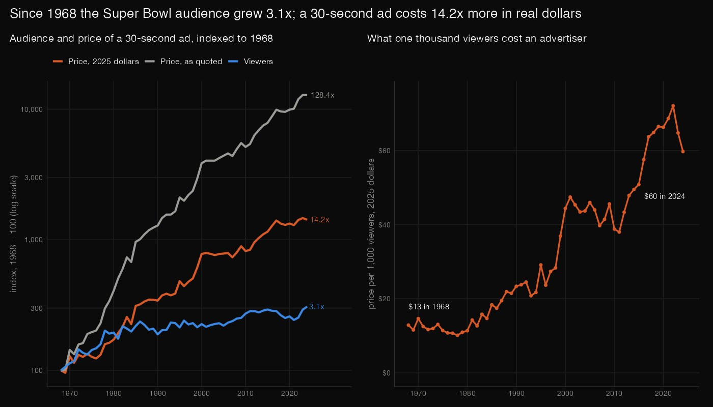
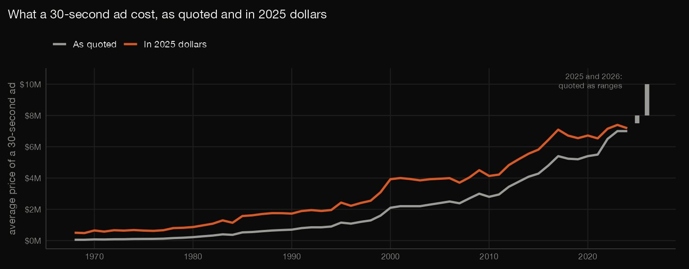
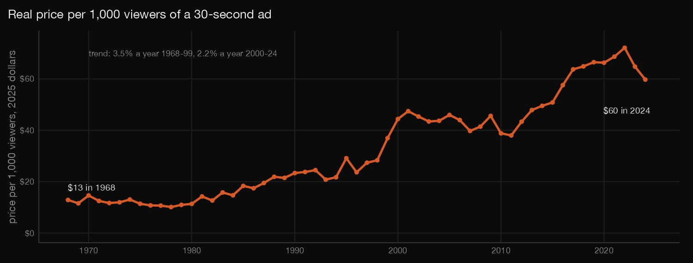
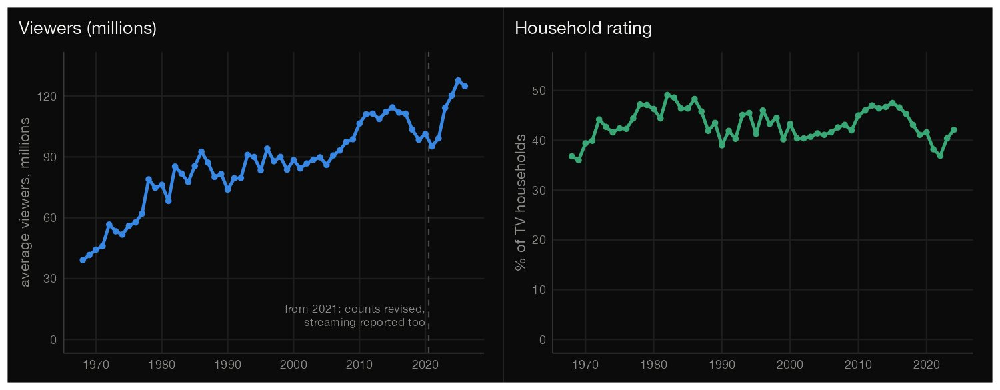
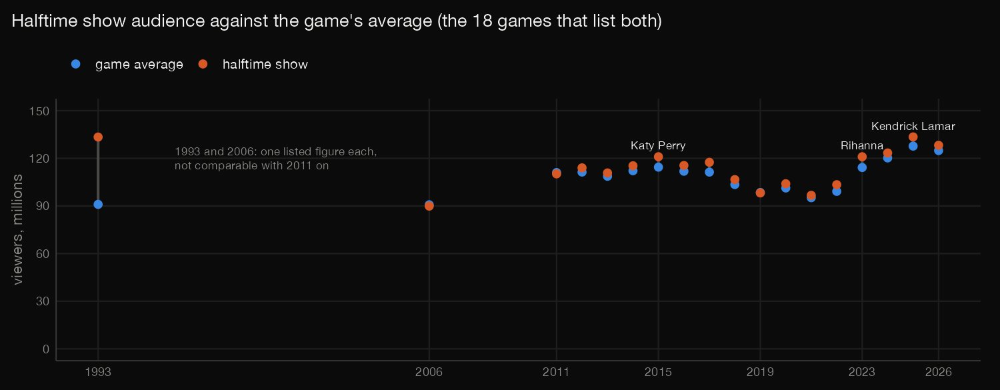
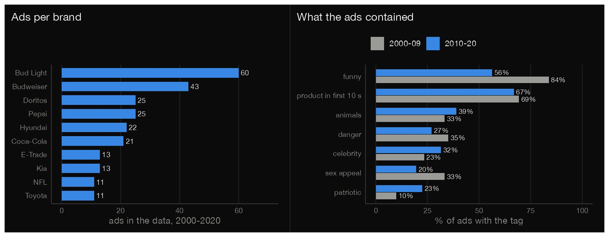
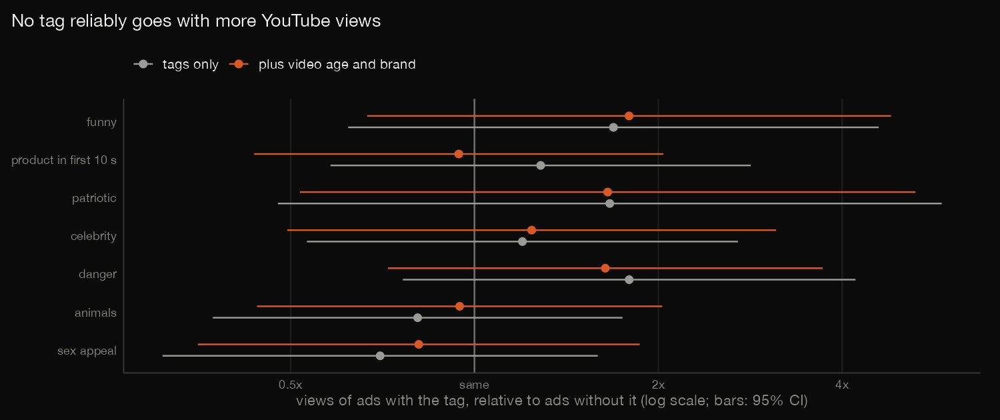

R · Media analytics · 2026-10
Did Super Bowl Ad Prices Outrun the Audience?
From 1968 to 2024 the Super Bowl audience grew 3.1x but a 30-second ad grew 14.2x in 2025 dollars: a thousand viewers cost $13, then $60. The audience has shown no clear growth since 2010. No ad feature (funny, animals, sex, celebrity) reliably goes with YouTube views.

Prices are Wikipedia's one average per game, not what advertisers paid, and audience counts are revised and not like-for-like from 2021 (trends ending in 2019 agree). The ads are the 10 brands with the most spots, tagged by FiveThirtyEight staff; YouTube counts are from early 2021 and many videos are third-party uploads. Associations, not causes. Sources: Wikipedia (CC BY-SA 4.0), FiveThirtyEight (no licence file; its data repo says CC BY 4.0 unless noted), TidyTuesday and the YouTube API (aggregates only), BLS CPI-U via FRED.
01 — The problem
Advertisers pay millions to be seen during the Super Bowl. Has the price of a 30-second ad run ahead of the audience it buys, and do the ads' features have anything to do with how many people watch them online?
The task follows DataCamp's "Analyzing Super Bowl Viewership and Advertising" (R, beginner: games, ads, halftime shows). It is built on public tables, Wikipedia's for the games and FiveThirtyEight's and TidyTuesday's for the ads of 2000 to 2020, with prices put into 2025 dollars with the CPI.
02 — What I built
Five public files, an R analysis and a recount:
- The audit: two-network Super Bowl I and a second feed dropped, price ranges, a missing CPI month, repeated ad rows, a misspelled brand.
- Audience against price: 57 games, real prices, price per thousand viewers and steady growth rates with Newey-West intervals.
- Halftime and household rating: the 18 games that list a halftime audience, and the share of TV homes watching.
- The ads: seven tags, 2000 to 2009 against 2010 to 2020 with a within-brand test, and ads per brand.
- Views and likes: regressions with upload age, brand and year held fixed.
check.pyrecounts all 1,667 numbers in plain Python.
03 — How it was built
- 01
Download five files at pinned versions
FiveThirtyEight's ad tags and TidyTuesday's YouTube counts at fixed commits, two Wikipedia tables through the MediaWiki API at fixed revisions, and the CPI-U series from FRED (about 1.3 MB, fetched and never committed, with their checksums). A rerun gets the same text even if the Wikipedia pages change.
REV_RATINGS <- 1371496892; REV_HALFTIME <- 1373962383 - 02
Put prices in 2025 dollars
Each game's price is multiplied by the annual mean CPI-U of 2025 over that of the game's year (2025 has 11 months: the Bureau of Labor Statistics never published October 2025). The result matches Wikipedia's own inflation-adjusted column to within 0.04%.
g$real_low <- g$cost_low * cpi_ref / g$cpi; g$real_high <- g$cost_high * cpi_ref / g$cpi - 03
Fit steady growth, allowing for neighbours
A line through the logarithm of each series against the year is a steady growth rate; consecutive games are not independent, so the 95% interval uses Newey-West standard errors with three lags.
m <- lm((if (log) base::log(y) else y) ~ x); V <- NeweyWest(m, lag = NW_LAG, prewhite = FALSE, adjust = FALSE) - 04
Relate views to the ad's features, holding age and brand fixed
The logarithm of views is regressed on the seven tags, then with the days since upload, a fixed effect for each brand, and the Super Bowl year; the intervals use HC3 robust standard errors.
m <- lm(as.formula(paste("y ~", paste(c(tags, rhs), collapse = " + "))), data = d); V <- vcovHC(m, type = "HC3") - 05
Recount it all in plain Python
check.pyparses the Wikipedia HTML withhtml.parser, solves every regression by Gauss-Jordan elimination, writes out the Newey-West and HC3 formulas and sums Fisher's exact and Mantel-Haenszel tests by hand: 1,667 numbers agree with R's to a relative 1e-8, and counts match exactly.h = [sum(X[i][a] * A[a][b] * X[i][b] for a in range(k) for b in range(k)) for i in range(n)]
04 — Results
The price grew far faster than the audience. From 1968 to 2024 the average audience grew 3.1 times (39.1 to 120.3 million viewers) and the price of a 30-second ad 128 times as quoted, 14.2 times in 2025 dollars ($0.50M to $7.2M). One thousand viewers cost an advertiser $13 in 1968 and $60 in 2024, 4.6 times as much. The table gives steady growth rates, % a year, from a line through the logarithm of each series (audience; price in 2025 dollars; price per thousand viewers), over 57 games. The real price doubles every 14 years and the audience every 49.
| Years | Viewers | Price | Per 1,000 |
|---|---|---|---|
| 1968–2024 | 1.4% | 5.2% | 3.8% |
| 1968–99 | 2.4% | 6.0% | 3.5% |
| 2000–2024 | 1.1% | 3.3% | 2.2% |
| 2010–2024 | -0.3% | 4.0% | 4.3% |
| 1968–2019 | 1.6% | 5.5% | 3.8% |


No clear audience growth since 2010; the price kept climbing. From 2010 to 2024 the audience trend is -0.3% a year (-1.2% to 0.6%, flat) while the real price grew 4.0% (2.8% to 5.2%). Ending in 2019, before the measurement changes below, gives the same picture (audience 1.6%, real price 5.5% a year). The 2025 game drew 127.7 million, the highest figure in the table, at a quoted $7.5M to $8.0M. The share of TV homes watching is flat: the household rating peaked at 49.1 in 1982, fell to 36.9 in 2022 and has a trend of −0.03 points a decade (−1.0 to +0.9).

Halftime. 18 games list a halftime audience, and in 15 it is above the game's average; from 2011 on, the median is 3% above. The highest is 133.5 million in 2025. Halftime comes mid-broadcast, when the audience is near its peak, so the shows are not shown to draw viewers; the 1993 figure (133.4 million against 91.0) is a single listed number and is not comparable.

The ads: less funny, more patriotic. Of 244 ads from 2000 to 2020: funny 69%, product shown early 68%, animals 36%, danger 31%, celebrity 28%, sex appeal 26%, patriotic 17%. The table compares 2000 to 2009 with 2010 to 2020, with a Mantel-Haenszel p within brands (last column) because the brand mix changed; with seven tags, only p under 0.007 is convincing: funny and patriotic pass, sex appeal does not.
| Ad is | 2000–09 | 2010–20 | p |
|---|---|---|---|
| funny | 84% | 56% | <0.001 |
| product-first | 69% | 67% | 0.58 |
| patriotic | 10% | 23% | 0.004 |
| celebrity | 23% | 32% | 0.35 |
| danger | 35% | 27% | 0.17 |
| animals | 33% | 39% | 0.19 |
| sex appeal | 33% | 20% | 0.12 |
Two brands are 42% of the data. Bud Light aired 60 of the ads and Budweiser 43, up to 7 spots in a single game. The ten brands were picked for having the most spots, so this describes them and not Super Bowl advertising. Views are medians over the ads with counts.
| Brand | Ads | Games | Median views |
|---|---|---|---|
| Bud Light | 60 | 19 | 33,766 |
| Budweiser | 43 | 20 | 49,339 |
| Doritos | 25 | 14 | 232,124 |
| Pepsi | 25 | 16 | 43,983 |
| Hyundai | 22 | 12 | 6,151 |
| Coca-Cola | 21 | 11 | 72,245 |
| E-Trade | 13 | 9 | 24,684 |
| Kia | 13 | 11 | 17,892 |
| NFL | 11 | 10 | 403,641 |
| Toyota | 11 | 9 | 72,194 |

No feature reliably goes with views or likes. 228 ads have view counts (median 41,635); the ten most viewed videos hold 89% of all views. Views rise with the age of the upload (rank correlation 0.30), not with the airing year (0.01). Unadjusted, patriotic ads have a median 1.8 times the views of the others, but the table's ratios (views of ads with the feature over those without, 95% interval) all include 'same' once upload age and brand are held fixed, and so does every like-share interval (within plus or minus 9 points). Estimates swing between specifications, as they do when intervals are this wide.
| Ad is | Raw | Age + brand |
|---|---|---|
| funny | 1.7x (0.6–4.6) | 1.8x (0.7–4.8) |
| product-first | 1.3x (0.6–2.8) | 0.9x (0.4–2.0) |
| patriotic | 1.7x (0.5–5.8) | 1.7x (0.5–5.3) |
| celebrity | 1.2x (0.5–2.7) | 1.2x (0.5–3.1) |
| danger | 1.8x (0.8–4.2) | 1.6x (0.7–3.7) |
| animals | 0.8x (0.4–1.7) | 0.9x (0.4–2.0) |
| sex appeal | 0.7x (0.3–1.6) | 0.8x (0.4–1.9) |

Read with care. Audience counts from 2021 are revised or may include streaming, so they are not like-for-like. Prices are one average per game, not what advertisers paid. Price per viewer is not worth: nothing here measures sales or attention. 87 of the 228 videos were uploaded after the game's year, many by third parties, and that uploader effect is not in the data.
05 — What I'd do next
- Get the ads of 2021 to 2026 and a like-for-like audience series (TV plus streaming) from the original Nielsen releases, so the recent years can join the trend.
- Separate official brand channels from third-party re-uploads, the confounder this data cannot see, and refresh the counts with the YouTube API.
- Ask what drives the price: the audience alone, or the network, the teams' markets and the competitiveness of the game.